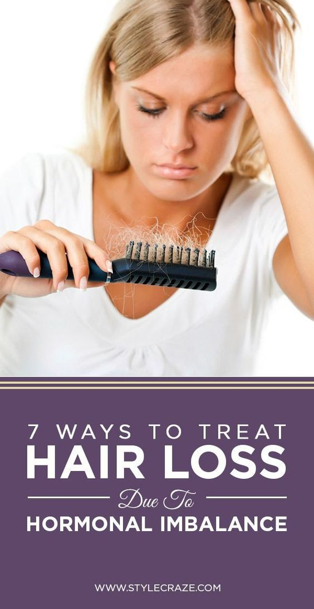
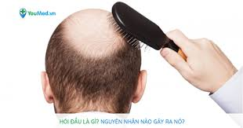
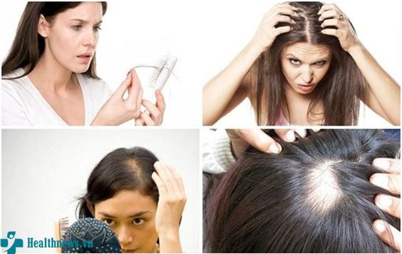
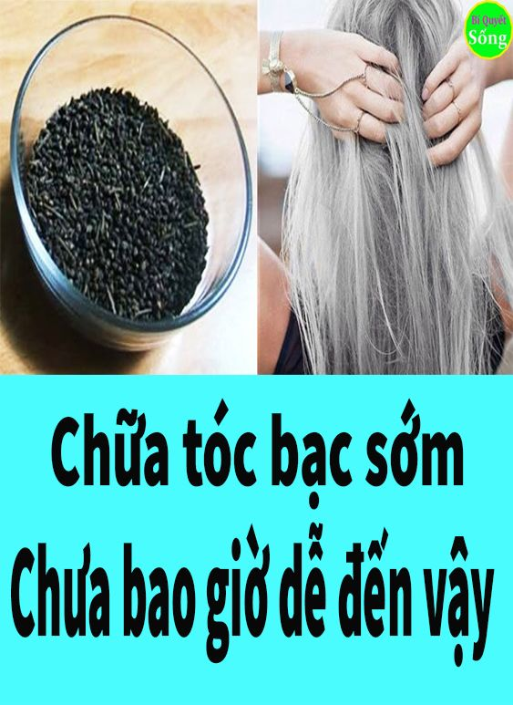
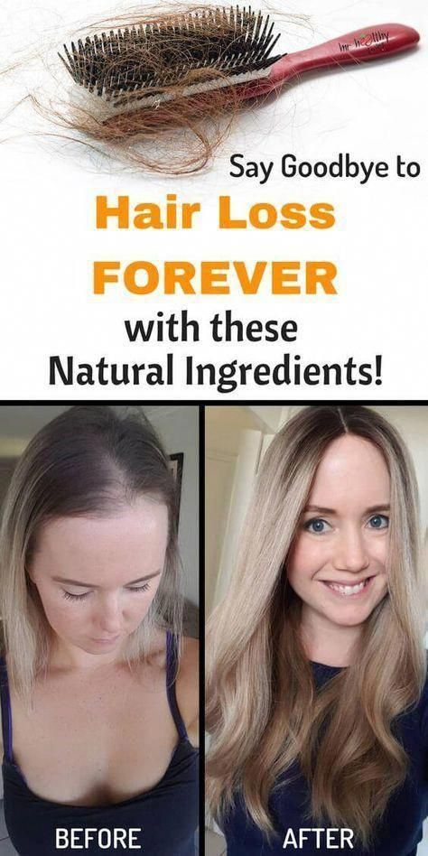
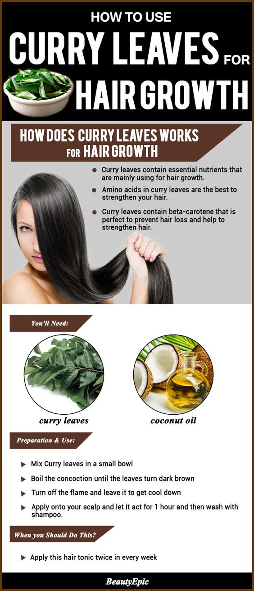

Common types of damaged hair:
- Premature Baldness Etc

What is baldness?
Baldness is part of an aging, pathological or genetic process. Some older people accept it as a law of nature, but most will feel inferior and embarrassed if faced with baldness. All people have "natural" hair loss 40-60 strands/day and when the hair loss is intense, continuously losing over 100 strands per day or unbalanced loss between the scalp patches...that's okay. called baldness.
There are 2 types of baldness are:
- Male-pattern hair loss: hair loss on the upper forehead and top of the head. Usually apparent by age.
- Spot baldness (Spot baldness): hair loss only in one or a few specific locations, the size of the loss area changes, can be small (1cm2) to the head (completely bald) "Also note that baldness occurs in female pattern baldness as well: hair loss occurs across the entire scalp, causing hair to thin and thin over time starting from the grooves and in sides of the forehead ."
Causes of baldness:

- In men:
Heredity: 95% of male pattern baldness is inherited. If a family member has hair loss and baldness, the offspring will be inherited because baldness is dominant. This affects of men aged 30 and over and about 85% of men in their 50s. Neurocrine disorders: When there is an imbalance in the endocrine hormones, it promotes DHT production. rather than a factor that directly affects hair stem cells causing hair loss mainly in men. Stress: The pressure on the backbone of family, work and life causes the male body to release special hormones that slow hair growth, cause hair loss and baldness. Some daily habits: Using medicine to treat illness, staying up late, smoking, drinking alcohol or using stimulants ... makes the condition of the hair more serious.

- In women:
Neurocrine disorders: Baldness in women is usually not as obvious as it is in men. However, in women, frequent hair loss is the menopause, which suggests a close relationship between nerve endocrine and hair growth. Nutritional imbalance: Occurs when entering the menstrual cycle (without iron supplementation), after giving birth, breastfeeding, rapid weight loss or due to excessive diet... Prolonged stress: Women also It is difficult to avoid the harm from prolonged stress like men, especially relationships, emotions .... Abuse of hair beauty chemicals: The straightening, dyeing, and curling of hair regularly will make the "appearance "Of the hair becomes dry, lack of vitality. In addition, when exposed to a lot of chemicals that dye hair increases the risk of cancer.
Methods of baldness treatment:
- Baldness treatment with natural methods:
- Baldness treatment with medical technology:
- Graying 
- Hair Loss 
- Hormonal imbalances
- Nutritional deficiencies.
- Side effects of drugs.
- The scalp is not properly cared for.
- The effects of chemicals & heat when styling hair.
- Stress can cause hair loss.
- Full nutritional supplement.
- Do not brush your hair when it is wet.
- Growth related hair 
- Stage Anagen: Anagen is the active growth phase of the hair follicles, during which the base of the hair divides rapidly, contributing to the growth of the hair's length. During this stage, hair grows about 1 cm every 28 days. Meanwhile, hair maintains this period of active growth for 2–7 years; This stage is genetically determined. At the end of the anagen phase, an unknown signal causes the follicle to enter the catagen phase.
- Stage Catagen: The catagen phase is a short transition period that occurs towards the end of the anagen phase. It signals the end of active hair growth. This phase lasts about 2-3 weeks. The hair cells near the hair follicles have their blood supply cut off and stopped growing.
- Stage Telogen: The telogen phase is the resting phase of the hair follicle. When the body is under stress, about 70% of the hair can transition early into the telogen phase and noticeable loss of hair begins. The hair cells in the telogen phase are dead cells and are keratinized to resemble the surface epidermis of the skin. There are about 50 to 100 hairs shed daily on a normal scalp.
If you're trying to stimulate new hair growth, try some natural remedies. Massage: Regularly massage the scalp to relax the mind, stimulate blood circulation to create conditions for healthy hair growth. Just use the soft skin of 10 fingertips to gently massage the hair follicles for fast hair growth, thick and healthy hair. Using essential oils for hair treatment: Some essential oils are known to stimulate hair follicles such as olive oil, coconut oil, grapefruit oil...to help improve the health and shine of the hair. Live positive and stay away from stimulants: Having a healthy lifestyle is that you have laid the foundation for a healthy body to cope with hair loss, uncomfortable baldness.
In cases of baldness caused by a pathology, baldness treatment will be necessary. This will likely include medications that reduce inflammation and suppress the immune system. However, when you find a cure that causes hair loss, you need to stop for at least three months. Hair transplants: Transplanting is a medical procedure that causes hair that was previously free of hair to be covered with new strands of hair, transplanted from the outside. Laser: Hair loss treatments are based on the effects of sunlight. A few studies show that lasers are effective in improving hair density on the scalp.
Why is the hair fading?
If you look at the pictures of President Obama taken before he ran for president and since he left office, you will notice a clear difference: previously only brown hair dark, he now has more silver than brown. It seems the tension of running a country will make anyone gray-haired. But does stress really cause gray hair? And why does the hair turn gray, even for those who work under stress like the President of the United States?
In humans, most gray hair is not related to stress. In fact, hair doesn't actually "turn to" gray hair. When the hair follicle forms the hair, the hair color is predefined. If a strand of hair starts to turn brown (either red or black or yellow), it will never change color (unless you dye it). Hair follicles produce less color as they age, so as hair goes through a natural death cycle and is regenerated, hair is more likely to develop into gray hair that begins after age 35. Genetics can close. a role in gray hair inception. Although stress cannot make your hair gray, stress can cause a common condition called telogen effluvium (telogen effluvium) hair loss, which causes hair to fall out about three times faster than normal. However, hair will grow back, so this condition does not cause baldness. But if you are middle-aged, your hair falls out a lot and regenerates more quickly due to stress, then it is possible that your hair grows silver instead of its original color. A 2020 study in rats demonstrated that stress can result in their feathers turning silver under stress. Whether this applies to humans and how stress plays a role in graying is not yet clear. Stress A 2020 study in rats has demonstrated that stress can lead to their feathers turning gray under stress. Diseases that cause gray hair Most people with gray hair are due to old age. However, sometimes gray hair shows up as a sign of the disease, especially if it occurs at a particularly young age. Health problems that can be foretold by gray hair include: Vitamin B12 deficiency Nneurofibromatosis (also known as Von Recklinghausen's disease): This group of genetic diseases causes tumors to grow along nerves and growth abnormalities of bones and skin. Tuberous sclerosis: This is an uncommon and inherited condition that causes benign tumors in many organs (including brain, heart, kidneys, eyes, lungs, and skin). Vitiligo: This condition causes melanocytes (the cells at the base of the hair follicles that give off color) to be lost or destroyed, possibly due to the immune system attacking the scalp. Alopecia areata: this is a disorder in which patches of hair can fall off suddenly, especially colored strands (not gray hair). This can lead to gray hair "overnight" because gray or white hairs suddenly become more visible 2. What should gray hair drink? If worried about some gray hairs or if you have a lot of gray hair, you can make lifestyle changes so that you can keep your original hair color longer. Here are some changes. Get enough vitamins The vitamins that keep your hair healthy include: B vitamins, especially B12, and biotin. Vitamin D Vitamin E Vitamin A Getting Enough Minerals Minerals can play an important role in Hair development and repair include: Zinc Iron Magnesium Selenium Copper Quitting Among the factors that negatively affect hair, smoking can damage and shrink the hair follicles. Protect hair from the sun Cover your head with a hat or towel. Stop damaging your hair Some hair care habits that can damage your hair include: Hair Removal Do not use a wide tooth comb, especially when wet. Use too much heat with a curling iron or a hair dryer Use strong soap / shampoo Bathing too often Smoking doubles your risk. diabetes Smoking can damage and shrink the hair follicles 3. Home remedies for gray hair There are a number of natural remedies for graying and too much gray hair with a number of natural remedies: Oil coconut. Every day, before going to bed, massage coconut oil into your hair and scalp. The next morning, wash your hair as usual. Ginger. Every day, eat a teaspoon of crushed fresh ginger mixed with 1 teaspoon of honey. Molasses. Every day, eat one tablespoon of molasses (from cane juice, not from beet sugar); This product is said to be able to reverse the discoloration process. Me forest. Drink 6 ounces of fresh wild tamarind juice per day or massage your hair with wild tamarind oil once a week. Tamarind is also known as Amla (Indian gooseberry) fruit. Black sesame seeds (Sesamum indicum). Two to three times a week, eat a teaspoon of black sesame seeds to slow down and possibly reverse the graying process. Butter Ghee. Each week, massage your hair and scalp with pure Ghee butter (cleansed butter). Amaranth (Amaranthus). Three times a week, apply fresh amaranth juice to your hair. Wheatgrass juice (Thino)
Causes of hair loss
HAIR DEVELOPMENT CYCLE